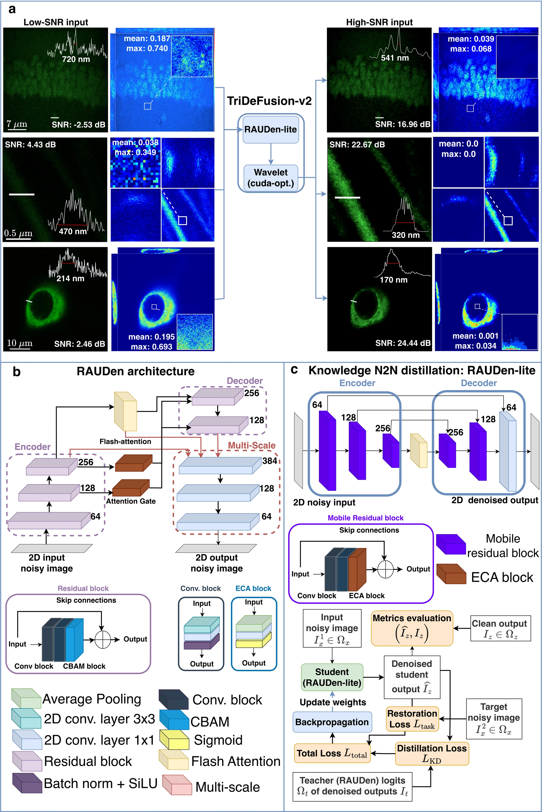
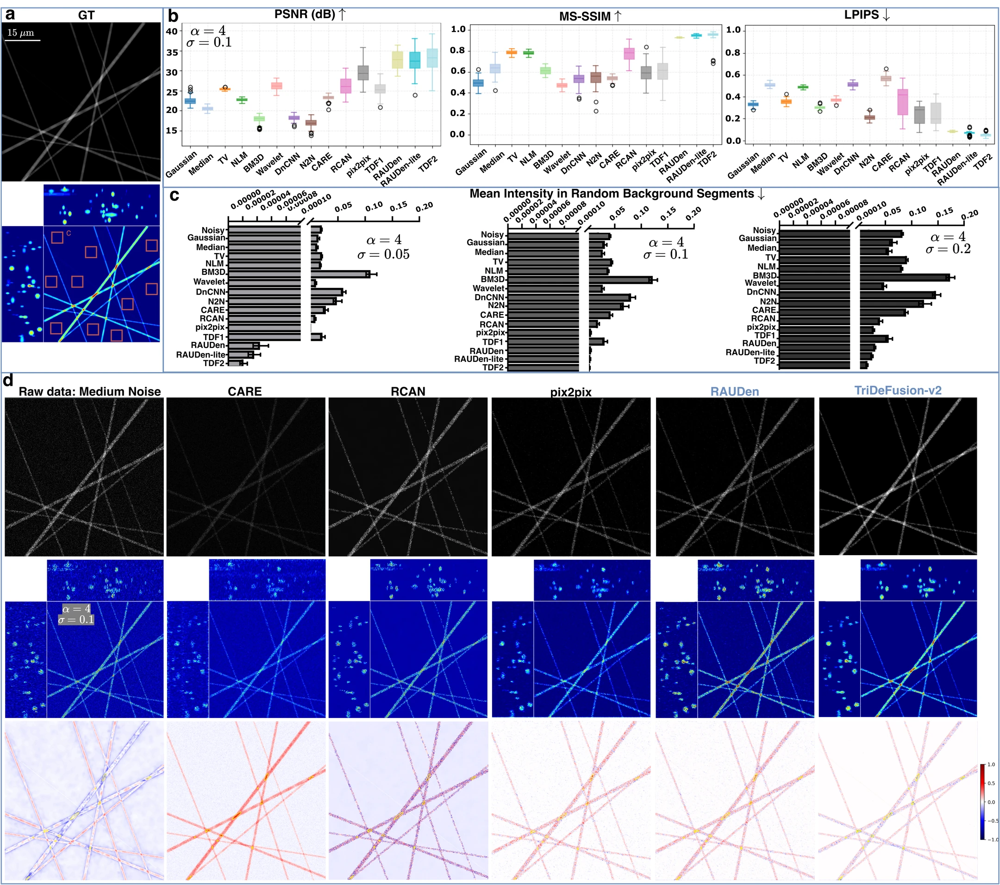
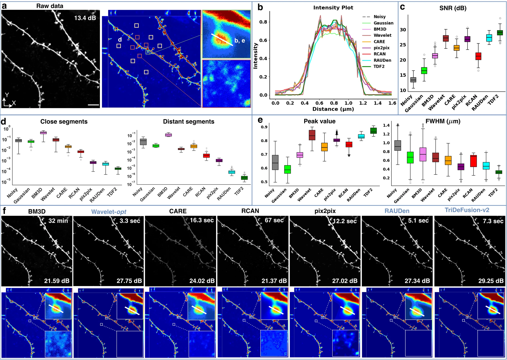

Figure 1. TriDeFusion-v2 combines a compact learned denoiser with wavelet-domain filtering to restore noisy 3D fluorescence microscopy data.
Abstract
Fluorescence microscopy reveals fine biological structures but can produce noisy images, especially under low-light imaging conditions. TriDeFusion-v2 (TDF2) combines a compact learned denoiser with wavelet-domain filtering to restore 3D fluorescence microscopy data. The paper evaluates the method on synthetic and real microscopy data, considering both restoration quality and inference efficiency.
Method
TDF2 uses a compact RAUDen-Lite student denoiser followed by a wavelet filtering stage. The wavelet operator is CUDA-optimized for accelerated execution. During training, a RAUDen teacher provides denoised targets; the student is trained with restoration and distillation losses. This design aims to retain useful image detail while reducing the cost of the denoising model.
Knowledge distillation transfers guidance from the larger RAUDen teacher to the compact RAUDen-Lite student. The learned stage estimates the restored signal, and wavelet filtering then refines the output. This hybrid design combines a trainable image prior with a signal-processing stage; the comparisons below include the teacher, the student, and the complete TDF2 pipeline so their contributions can be inspected.
From TriDeFusion-v1 to v2
TriDeFusion-v2 is a follow-up to TriDeFusion-v1. The original TriDeFusion paper introduced an enhanced denoising algorithm for 3D fluorescence microscopy that integrates modified Noise2Noise and non-local means. TDF2 advances this line of work with a distilled hybrid residual-attention denoiser and wavelet filtering. The v1 paper appeared in the 2024 IEEE SIBIRCON conference; see its IEEE record.
Results highlights
Key findings from the synthetic test volumes and the real confocal example. Follow each link to the supporting figure or table.
At high synthetic noise, TDF2 records the highest PSNR and MS-SSIM and the lowest MAE and LPIPS among the methods in Table 1. Its mean PSNR is 6.6 dB above TDF1.
Table 1: restoration metrics → · Figure 2 →At α = 1, σ = 0.2, mean background intensity decreases from 0.0799 in noisy data to 0.0181 with TDF2. TDF2 also has the lowest reported mean background intensity at the other two settings.
Table 2: background suppression →Mean PSNR at high synthetic noise rises from 26.8 dB for RAUDen to 27.6 dB for RAUDen-Lite and 29.2 dB for TDF2. The image comparisons complement these aggregate scores.
Table 1 → · Figure 2: synthetic comparisons →The displayed TDF2 restoration is annotated with an SNR of 29.25 dB, compared with 13.4 dB for the raw dendrite image. Spine profiles and background measurements provide additional context for this example.
Figure 4: confocal dendrite → · Figure 3: animation →Results
The evaluation combines controlled synthetic volumes with real fluorescence microscopy. Synthetic data provide a clean reference for measuring restoration errors, while real confocal images reveal how the methods affect dendritic shafts, spines, and surrounding background. These views complement one another: quantitative scores summarize reconstruction quality, and the image comparisons show where individual methods differ.
Synthetic 3D tubular structures
The synthetic evaluation uses 100 independent test volumes and nine Poisson–Gaussian noise settings. Figure 2 shows reference structures, metric distributions, background measurements, and representative restorations. Difference maps highlight deviations from the clean reference, helping relate the numerical scores to residual noise and lost detail. Table 1 reports the severe-noise setting (α = 1, σ = 0.2); Table 2 compares background intensity at three noise levels.

Real dendrites and confocal imaging
The animation in Figure 3 provides a view of the denoised dendritic structures over time. Figure 4 compares restoration of a primary hippocampal dendrite imaged with 3D confocal microscopy. Its maximum-intensity projections and enlarged regions show the dendrite and spines alongside changes in nearby background.
Intensity profiles and SNR measurements describe signal contrast, while proximal and distal background measurements distinguish suppression near the dendrite from suppression farther away. Peak intensity and full width at half maximum (FWHM) characterize the selected spine’s intensity and apparent width. Together, these measurements help assess whether a visually cleaner result also retains a localized signal profile.

Table 1. Denoising performance on synthetic tubular volumes under high noise (α = 1, σ = 0.2)
| Method | PSNR (dB) ↑ | MAE ↓ | MS-SSIM ↑ | LPIPS ↓ |
|---|---|---|---|---|
| Gaussian | 18.9 ± 0.8 | 0.099 ± 0.009 | 0.669 ± 0.024 | 0.401 ± 0.015 |
| Median | 16.8 ± 0.5 | 0.083 ± 0.004 | 0.633 ± 0.026 | 0.849 ± 0.018 |
| Wavelet | 22.3 ± 0.5 | 0.046 ± 0.002 | 0.610 ± 0.013 | 0.479 ± 0.018 |
| TV | 19.0 ± 0.2 | 0.089 ± 0.001 | 0.714 ± 0.018 | 0.819 ± 0.040 |
| NLM | 15.6 ± 0.1 | 0.093 ± 0.002 | 0.607 ± 0.016 | 0.985 ± 0.008 |
| BM3D | 14.3 ± 0.4 | 0.177 ± 0.011 | 0.655 ± 0.013 | 0.774 ± 0.010 |
| DnCNN | 15.2 ± 0.4 | 0.162 ± 0.006 | 0.675 ± 0.022 | 0.559 ± 0.010 |
| N2N | 15.1 ± 0.6 | 0.703 ± 0.031 | 0.153 ± 0.009 | 0.388 ± 0.021 |
| CARE | 17.9 ± 0.3 | 0.097 ± 0.004 | 0.643 ± 0.009 | 0.859 ± 0.011 |
| RCAN | 21.4 ± 1.9 | 0.085 ± 0.019 | 0.747 ± 0.027 | 0.255 ± 0.087 |
| pix2pix | 24.2 ± 2.1 | 0.037 ± 0.002 | 0.681 ± 0.037 | 0.165 ± 0.054 |
| TDF1 | 22.6 ± 1.3 | 0.098 ± 0.026 | 0.794 ± 0.059 | 0.233 ± 0.089 |
| RAUDen | 26.8 ± 2.2 | 0.038 ± 0.001 | 0.817 ± 0.009 | 0.139 ± 0.006 |
| RAUDen-lite | 27.6 ± 2.5 | 0.032 ± 0.002 | 0.825 ± 0.011 | 0.112 ± 0.019 |
| TDF2 | 29.2 ± 2.8 | 0.023 ± 0.006 | 0.85 ± 0.05 | 0.082 ± 0.016 |
Values reproduced from Table 1 of the paper. Higher PSNR and MS-SSIM and lower MAE and LPIPS indicate better restoration scores. Evaluation uses 100 independent synthetic 3D tubular test volumes.
Table 2. Mean intensity in randomly sampled background regions for different noise levels
| Method | α = 16; σ = 0.05 | α = 4; σ = 0.1 | α = 1; σ = 0.2 |
|---|---|---|---|
| Noisy | 0.0199 ± 0.0005 | 0.0399 ± 0.0009 | 0.0799 ± 0.0018 |
| Gaussian | 0.0144 ± 0.0060 | 0.0307 ± 0.0072 | 0.0753 ± 0.0110 |
| Median | 0.0126 ± 0.0020 | 0.0260 ± 0.0037 | 0.0413 ± 0.0089 |
| TV | 0.0209 ± 0.0007 | 0.0431 ± 0.0012 | 0.0851 ± 0.0028 |
| NLM | 0.0186 ± 0.0003 | 0.0367 ± 0.0006 | 0.0790 ± 0.0018 |
| BM3D | 0.0490 ± 0.0118 | 0.1229 ± 0.0155 | 0.1751 ± 0.0120 |
| Wavelet | 0.0096 ± 0.0012 | 0.0259 ± 0.0036 | 0.0552 ± 0.0059 |
| DnCNN | 0.0607 ± 0.0119 | 0.0831 ± 0.0114 | 0.1555 ± 0.0097 |
| N2N | 0.0489 ± 0.0179 | 0.0706 ± 0.0178 | 0.1259 ± 0.0170 |
| CARE | 0.0372 ± 0.0058 | 0.0418 ± 0.0059 | 0.0884 ± 0.0040 |
| RCAN | 0.0089 ± 0.0014 | 0.0171 ± 0.0030 | 0.0423 ± 0.0065 |
| pix2pix | 0.00006 ± 0.00002 | 0.0039 ± 0.0005 | 0.0267 ± 0.0026 |
| TDF1 | 0.0221 ± 0.0083 | 0.0318 ± 0.0082 | 0.0565 ± 0.0084 |
| RAUDen | 0.00005 ± 0.00002 | 0.0036 ± 0.0003 | 0.0284 ± 0.0013 |
| RAUDen-lite | 0.00004 ± 0.00001 | 0.0029 ± 0.0003 | 0.0227 ± 0.0018 |
| TDF2 | 0.00003 ± 0.00001 | 0.0017 ± 0.0002 | 0.0181 ± 0.0018 |
Values reproduced from Table 2 of the paper. Lower background intensity indicates stronger background suppression.
Citation
@article{zolin2026tridefusionv2,
title={TriDeFusion-v2: Distilled Hybrid Residual Attention Denoising and Wavelet Filtering},
author={Zolin, Ivan and Rakovskaya, Anastasiya and Fedorov, Evgenii and Belyaev, Sergey and Chukanov, Vyacheslav and Pchitskaya, Ekaterina},
journal={IEEE Access},
year={2026},
doi={10.1109/ACCESS.2026.3750817}
}TriDeFusion-v1
@INPROCEEDINGS{10758532,
author={Zolin, Ivan and Chukanov, Vyacheslav and Pchitskaya, Ekaterina},
booktitle={2024 IEEE International Multi-Conference on Engineering, Computer and Information Sciences (SIBIRCON)},
title={TriDeFusion: Enhanced denoising algorithm for 3D fluorescence microscopy images integrating modified Noise2Noise and Non-local means},
year={2024},
pages={211--216},
doi={10.1109/SIBIRCON63777.2024.10758532}
}